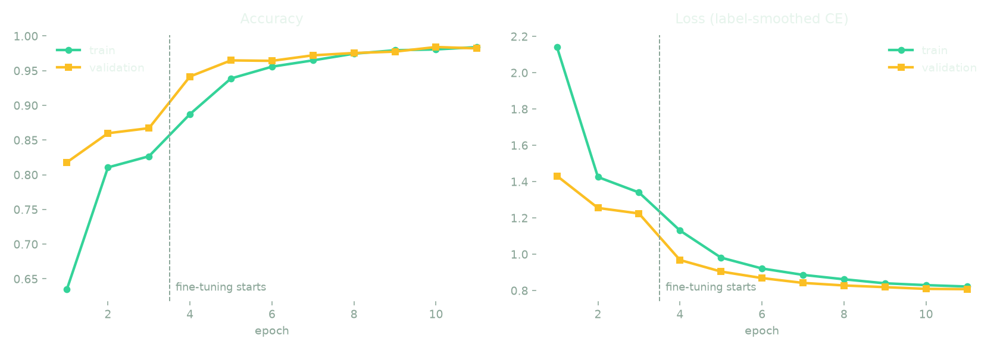
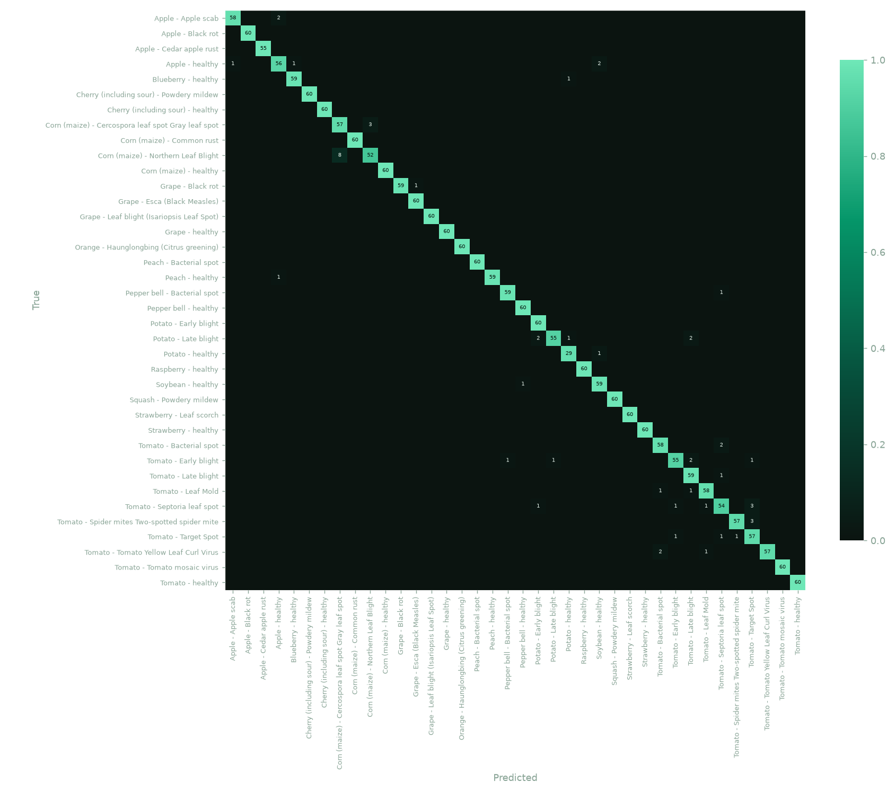

Diagnose crop disease
from a single leaf.
KrishiMitra AI identifies 38 crop leaf conditions across 14 crops, shows where it looked with a class activation heatmap, and explains cause, symptoms, treatment and prevention in English and हिंदी. No server, no upload: your photo never leaves this device.
Drop a leaf. Get a diagnosis in milliseconds.
The model is downloaded once and runs locally with ONNX Runtime Web (WebAssembly). Try a sample from the held-out test set, or use your own photo of a single leaf.
Waiting for a leaf
Pick a sample on the left or drop your own photo. You will get the diagnosis, the top-3 alternatives, a heatmap of where the model looked, and remedies in English or Hindi.
AI-based aid, not a final diagnosis. Confirm with your local Krishi Vigyan Kendra (KVK) before applying any chemical.
From pixels to advice, entirely on-device.
A compact five-stage pipeline. Every stage after the download happens inside this tab.
Capture
Photo from upload, drag-and-drop, paste or the sample gallery. Decoded locally by the browser.
Preprocess
Resize short side to 176 px, centre-crop 160×160, ImageNet mean/std normalisation into an NCHW float tensor, the same transform as training.
Infer
MobileNetV2 fine-tuned on PlantVillage, exported to ONNX (opset 17) and quantized to INT8, executed by ONNX Runtime Web on WebAssembly.
Explain
The graph also returns class activation maps. The top class's 5×5 map is upsampled bilinearly and blended over the leaf as a heatmap.
Advise
The label is mapped to a curated bilingual knowledge base: cause, symptoms, treatment and prevention for all 38 classes.
Why the browser heatmap is exact Grad-CAM
MobileNetV2 ends in global-average-pooling followed by one linear layer. For class c, the gradient of the score with respect to feature map Ak is the constant wck/(H·W), so Grad-CAM's channel weights are just the classifier weights. That reduces to the classic CAM, which I bake into the ONNX graph as a 1×1 convolution, so no gradients or autograd are needed in the browser. Verified against the PyTorch Grad-CAM: max absolute difference 1e-5.
Mc(x,y) = ReLU( Σk wck · Ak(x,y) ) logitsc = Σk wck · GAP(Ak) + bc A ∈ ℝ1280×5×5 w ∈ ℝ38×1280
Measured on images the model never saw.
Balanced PlantVillage subset: 7,473 train / 1,505 validation / 2,245 test images. The test images come from the dataset's separate test split and were never used for training or model selection.
PyTorch → ONNX parity
2,245 test images| Runtime | Size | Accuracy | Top-1 agreement with PyTorch |
|---|---|---|---|
| PyTorch FP32 (reference) | 9.3 MB | 97.64% | — |
| ONNX FP32 | 9.3 MB | 97.64% | 100.00% |
| ONNX INT8 (static QDQ, per-channel) · default | 3.0 MB | 97.82% | 99.06% |


Click to open full sizeSmall, fast, dependency-light.
An aid, not a final diagnosis
Predictions can be wrong, especially for crops or diseases outside the 38 supported classes, blurry photos, or leaves photographed against busy backgrounds. Before buying or spraying any chemical, please consult your local Krishi Vigyan Kendra (KVK) or agriculture officer and follow the product label.
यह AI आधारित सहायता है, अंतिम निदान नहीं। कोई भी दवा डालने से पहले नज़दीकी कृषि विज्ञान केंद्र (KVK) या कृषि अधिकारी से सलाह लें।